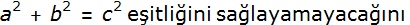

Genel Matematik
Bölüm 1 - Başlangıç Bilgileri
Herşey Thales ile Başladı
1.2 - Thales ile Başlayan Bilgilenme Yöntemi
1.2.1 - Filosofi
M.Ö. VII ve VI ‘ıncı yüzyıllarda, Bodrum yakınlarında Miletos kentinde yaşamış olan ve İzmirli Homeros’dan sonraki ilk büyük Helen düşünürü olan Thales, matematiğin bilgi gelişiminin, sistematik kurallarını belirtmiş olan ilk kişidir. Thales, matematik bilgilerinin evrensellik kazanabilmeleri için, mutlaka belirli ve aksi savunulamayacak kadar açık başlangıç bilgilerinden başlanarak, akıl yürütme yolu ile kanıtlanmaları gerektiğini belirtmiş kendisi de, kendi adı ile anılan “Thales Teoremi” ni kanıtlayarak bu aydınlanma yolunu açmıştır.
Thales tarafından ortaya konulan rasyonel (akılcı) düşünme yöntemleri, giderek gelişmiş ve Filosofi olarak adlandırılarak insanlığın tek bilgi edinme yöntemi haline gelmiştir. Filosofi, (Philos = sevgi, yatkınlık) ve sofos (bilgelik) sözcüklerinden türemiştir.
Filosofi, Aksiyoloji, Epistemoloji ve Metafizik (Ontoloji) konularından oluşur. Bu konular birbirlerinden kesin çizgilerle ayrılamazlar.
A - Aksiyoloji , αξιος (axios = değer) sözcüğünden türer ve bir değeri inceleyen bir düşünce koludur. Aksiyoloji,
Etik (İnsan davranışının değerleri ile ilgilenir. Özellikle, insanların nasıl davranmaları gerektiğini belirlemeye çalışır. Nasıl davrandıkları ve nasıl davranmaları gerektiğini düşünmeleri ile ilgilenmez).
Estetik (Sanatsal değerlerin, uyum, düzen ve yöntemleri ile ilgilenir).
alt dallarına ayrılır.
B - Epistomoloji, bilginin oluşması, düzenlenmesi ve sınırları ile ilgilenir. Özellikle, doğanın incelenmesi, insan bilgisinin sınırları, epistemolojinin ilgi alanlarıdır.
Mantık (Lojik) (logos = sözcük, kavram) bilgi edinmede doğru düşüncenin, yanlış düşünceden ayrılmasının yöntemlerinin belirlenmesi ile ilgilenir. Mantık, epistemolojinin bir alt konusu olarak düşünülebilir. Fakat, genel olarak mantık, filosofinin tüm dallarında uygulanır. Bunun nedeni her bilgilenme eyleminde mantığa gereksinme duyulmasıdır.
C - Ontoloji veya Metafizik. Gerçekte neyin gerçek neyin gerçeküstü olduğunun incelenmesidir. Metafizik, doğal düzenin ilk prensiplerini inceler, insan zekasının algılayabildiği en üst genellemeleri belirlemeye çalışır.
1.2.2 - Mantık
“Herşey Thales’in Başlattığı Mantık Çalışmaları ile Başladı...”
Mantık bilgilenme (inferans) yöntemlerini inceler. Bilgilenme, bilinenlerden bilinmeyenlerin elde edilmesidir. Mantık bu işlevin doğru yöntemlerle sağlanmasını hedefler.
Mantık sadece bilgilenme yönteminin doğruluğu veya yanlışlığı ile ilgilenir.
Mantık normatif bir bir çalışma alanıdır. Yani mantık, işlevini belirli bir mantık sistemi için oluşturularak belirlenmiş, değişmez kurallara göre yapar. Bu şekilde belirli bir mantık sisteminden alınan sonuçların tutarlığı sağlanır.
Mantıksal çalışmalar, insanların beyninde yürütülen düşünce çalışmalarıdır. İnsanlar birbirlerinin düşüncelerini okuyacak telepatik yetilerden (henüz!) yoksun olduklarından, mantık düşüncelerini kullandıkları gündelik dil ile birbirleri ile iletişim kurarak açıklamak zorundadırlar. Yani mantık, düşünsel olarak geliştirilen yöntemlerin sözle açıklamasıdır. Zorluk da burada başlamaktadır. Çünkü mantık, özellikle matematik mantık çok kesinlik gerektiren bir çalışmadır. Oysa gündelik dil, her konuda fazla esnek, çoğu zaman birden fazla anlamı olan sözcükler içermektedir. Bu zorluk, tarih boyunca mantık çalışanlarını zorlamış, fakat günümüze kadar uygulanabilir bir çözüm bulunamamıştır.
Sistematik mantık yöntemlerini ilk tanımlayan ve uygulayan, Anadolulu (Miletuslu) Thales olmuştur. Thales, doğa olaylarının kenine özgü kuralları olduğunu ve doğa olaylarının din kuralları ile açıklanmaması gerektiğini belirten, bu şekilde rasyonel (akılcı) düşüncenin yolunu açan, batı yarımküresinin ilk düşünürüdür. Thales bilgi kazanımı (inferans) için, hem tümelden özele (dedüksiyon), hem de özelden tümele (indüksiyon) yöntemlerini uygulayan ilk düşünürdür.
Thales den sonra mantık çalışmaları öncelikle Magna Graecia’da (okunuşu latincede söylendiği gibi “Magna Greçya”, Grekçesi “Megali Hellas”, yani “Büyük Yunanistan” adı ile anılan, bugünkü İtalya’nın hemen hemen tüm güneyi ve Sicilya adasını kapsayan helenistik yerleşim). Elaides (bugünkü, İtalya’nın güney batısına bakan Tirenyen denizi kenarında, “Velia” kentidir. Şehri Pers istilasından kaçan Foça’lıların Hyele adı ile oluşturduğu bilinmektedir. Şehrin adı daha sonra Ele, en sonunda Elea , Elaides olmuştur). Elaides kentinden Parmenides (M.Ö. yaklaşık 515 - 460) , onun öğrencisi yine Elaides’li Zeno (M.Ö. yaklaşık 490 - 430) (Grekçe ve Türkçede Ksenon olarak tanınır) , sonra Atinalı Sokrates (M.Ö. yaklaşık 490 - 430), onun öğrencisi Atinalı Platon (M.Ö. yaklaşık 427 - 347) ve özellikle Platonun öğrencisi (Stagira, Makedonya)’lı (Atinada yerleşik) Aristoteles (M.Ö. 384 - 322) tarafından geliştirilmiştir.
Gündelik dil ile açıklanan ve hiçbir formülasyon kısıtlaması ile sınırlandırılmamış olan mantık, en geniş ve en açıklayıcı mantıktır. Bunlara örnek olarak Parmenides, Zeno, Sokrates ve Platonun diyalektik sorgulamaları en belirgin örneklerdir. Formüle dayanmayan (informal) (bu sözcük aynı zamanda resmiyetten uzak olmak anlamında da kullanılır) mantık, en açıklayıcı, fakat en az sistematize olmuş mantıktır. Formal olmayan mantığın kuralları belirgin olmadığından, uygulamaları da belirli kurallara bağlanmamış, özel uygulamalar olmaktan ileri gidemez.
Normatif mantık kurallarını ilk olarak belirleyen Aristoteles olmuştur. Aristoteles, mantıksal oluşumların içeriğine değil kurgulanmasına bakılması gerektiğini ilk belirten filosoftur. Aristoteles çalışmaları ile mantık biliminin işleyiş kurallarını oluşturmuş ve kendisinden sonra gelen nesillere adeta kuralları tamamen belirlenmiş, tamamlanmış bir bilim bırakmıştır. Aristotelesin belirttiği yöntemler, bugün dahi geçerliğini korumaktadır.
Aristoteles, önermelere M,N gibi alfabetik harfler konulması ile mantıksal formlar oluşturulabileceğini ve bu şekilde mantıksal savlar üzerinde, gündelik dilin getirdiği belirsizliklerinin etkilerinin azaltılabileceğini belirtmiştir. Çağının çok ilerisinde olan bu çalışmalar ancak bu son iki yüzüyılda değerlendirilebilmiştir. Bu çalışmalara rağmen, Yine de, Aristoteles mantığı, informal (formal olmayan) (formüllere dayanmayan) mantık olarak nitelendirilmektedir.
Aristolteles’in eserleri, kendisinden sonra Theophrastos, Rodoslu Andronicus (M.Ö. 60 yıllarında), özellikle “İsagog” adlı ünlü derlemesi ile Sicilya’da Porphirius (268-270) yıllarında derlenmiştir. Bu eserler “Organon” adı ile tanınmışlardır. Organon grekçe alet, organ anlamındadır. Aynı zamanda “Berraklaştırma, karmaşadan kurtulma, organize olma” anlamında da kullanılmıştır. Aristoles’in Organon’u tarih boyunca standart mantık kitabı olarak kabul edilmiştir. 1620 de İmmanuel Kant, Mantık konusunda Aristoteles’in söylediğinden daha başka bir şey icat etmenin olanaksız olduğunu belirtmiştir. Bu düşüncesi tamamen paylaşılmıştır. Organon, günümüzde bile mantığın anayasası olarak kabul edilmektedir. Günümüzde uygulanan formal mantık, Aristoles’ in çabalarının geliştirilmiş halidir.
Aritoteles’ten sonra, M.Ö yaklaşık 278- 206 yıllarında yaşamış olan stoik bir Filozof olan Chrisippus, Aristoteles’in belirtmiş olduğu düzenli mantık kavramlarına, “ve”, “eğer”, “veya” gibi kavramları ekleyerek günümüzdeki önermeler mantığının ilk örneklerini vermiştir. Bu açıdan önermeler mantığının, Aristotles’in sillojistik mantığına göre bir ilerleme olduğu kabul edilmektedir. Önermeler mantığı, matematik kuramların kanıtlanmasında uygulandığı için buna “Sembolik Mantık” veya “Matematik Mantık” adı da verilmiştir. Stoizm, dış dünyanın varlık ve yoksunluklarının düşünce sistemine etkisini azaltmaya çalışan bir düşünce ve yaşam ekolüdür. Thales ile başlayan ve Sokrates ile Platon’da örnekleri görülen bu ekolün mesupları, mantığa önemli katkılar yapmışlar, fakat bu bilgiler zamanla kaybolmuştur.
Aristotelesin tümelden özele tümdengelimsel (dedüktif) yönteminin yeni bir bilgi üretmediğini ve sadece bilinenleri yeniden düzenlediği zamanla ortaya çıkmıştır. Bu olguyu ilk farkeden ve dile getiren düşünür, M.S. 11 inci yüzyılda yaşamış olan ünlü Türk düşünür ve hekimi İbni-Sina olmuştur. İbni-Sina, 1950 lerde Alfred Tarski tarafından geliştirilmiş “Modal Mantık” yöntemini, “Geçici Zamanlı Modal Mantık” (Temporary Modal Logic) adı altında açıklamıştır. İbni-Sina, Avicenna (okunuşu: Avisenna) olarak tanındığı batı dünyasına aydınlanma yolunun ışığını yakan ilk düşünürdür. Bu ışık, ne yazık ki doğuyu aydınlatamamış, ve doğu Gazali’nin etkisi ile giderek koyulaşan bir karanlığa gömülmüş, bu karanlıktan ancak Türkiye, Büyük Atatürk’ün çabaları ile ve ancak 20 inci yüzyılın başlarında çıkabilmiştir. Atatürk sayesinde Türkiye, rasyonel bir düşünce yapısına kavuşmuş ve bir Avrupa ülkesi haline gelmiştir. Atatürk bizim yolumuzu aydınlatmış olan büyük bir önderdir. Modern Türkiyenin insanları olarak Atatürk’e büyük şükran borçluyuz. Yaktığı ışığın devamlı olması en büyük dileğimizdir.
Chrisippus’tan sonra da stoik filozoflar önermeler mantığına katkıda bulunmaya devam etmişler, fakat o çağlarda matematik bu düşünceleri özümseyecek kadar gelişmemiş olduğundan, uygulama olanağı bulmayan bu bilgiler, giderek kaybolmuştur. Bu mantık, aydınlanma çağında yeniden formüle edilmeye başlanmış ve günümüzde “Önermeler Mantğı” olarak mantığın bir kolunu oluşturmaktadır. Önermeler mantığı, mantığın önermeler üzerinden uygulanan bir bir koludur. Önermeler mantığı, matematik kuramlarının kanıtlanmasında uygulandığı için buna “Sembolik Mantık” veya “Matematik Mantık” adı verilmiştir. Bu açıdan önermeler mantığının, Aristoteles’in sillojistik mantığına kıyasla bir ilerleme olduğu kabul edilmektedir.
Aydınlanma çağında, 1200 lü yıllarda, din adamı (Abbé) ve filosof olan Pierre Abélard (Abbé l’Abélard), önermeler mantığını yeniden formüle etmiş ve matematikte uygulanmasına yön vermiştir. (Abbé l’Abélard, Heloïse d’Argenteuil ile destansı bir aşk hikayesi yaşamıştır). Abbé l’Abélard’dan sonra, bu konu yine beş yüzyıl sürecek bir durgunluk devresine girmiştir. Modern matematiğin başlatıcısı sayılan Gottfried (okunuşu: Gotfriyd) (Tanrıyı mutlu eden) Leibniz (1646-1716) bu konu ile ilk ilgilenen kişi olmuştur. Leibniz, matematik gibi kesin bir konuda, belirsiz terimler içeren gündelik dilin kullanılmasındaki sakıncaları görmüş ve salt formüllerden oluşan bir matematik dili oluşturmaya çalışmıştır. Leibniz’in çalışmaları, yine çağının ilerisinde olduğundan ve günündeki matematik henüz bu düşüncelere hazır olmadığından, yaygınlık kazananamamıştır. Leibniz’den sonra, matematik mantık yine iki yüzyıl sürecek bir unutulma sürecine girmiştir.
George Boole (Okunuşu: Buul) 1854 de “An Investigation of the Laws of Thought” (Düşünce Yasaları Üzerine Bir İnceleme) adlı eserini yazmış ve bu tarih, modern çağlarda uygulanan matematik mantığın başlangıcı olarak kabul edilmiştir. Boole’in ortaya koyduğu yöntemler, günümüze kadar güncelliğini korumuş, “Boole Cebiri” adı altında yaygınlaşmış ve günümüzde bilgisayarların yapımında, mantıksal devrelerin tasarımına yön vermiştir. Bu tarihten sonra, matematik mantık çok güncel ve aktif bir çalışma alanı haline gelmiştir. Boole’nin başlattığı çalışmalar daha sonra, Augustus de Morgan (1806 – 1871), Ernst Schröder (1841 – 1902) ve Guiseppe Peano (1858 - 1932) tarafından ilerletilmiştir.
Augustus de Morgan (1806–1871), bu satırların yazarının da doktora sonrası çalışma için bulunmaktan onur duyduğu, University of London, University College ile London Mathematical Society nin kurucusu olan matematik profesörüdür ve önermeler mantığı için temel iki yasa olan De Morgan kurallarını bulmuştur.
Charles Sanders Peirce (okunuşu: Pörs) (1839 - 1914) Büyük bir Amerikalı düşünür ve matematikçidr. Aslında bu satırların yazarı gibi bir kimyacıdır. Fakat, filosofiye yatkınlığının olağanüstü olduğu kabul edilmektedir. Birçok çağ açan kavramı, özellikle kümeler kavramını daha önceden görmüş ve belirtmiştir. Büyük vizyonu ne yazık ki yaşamında yeteri kadar anlaşılamamış, fakat belirttiği konular ileride büyük değişimler yaratmışlardır. Büyük değeri daha sonra anlaşılmış ve 1943 de Webster’s Biographical Dictionary Peirce için, “Zamanının en büyük düşünür ve mantıkçısı” ifadesini kullanmıştır. Çağımızın en büyük matematikçilerinden biri olan ve benim de derslerini Internet’ten izleme şansına eriştiğim Prof. Dr. Keith Devlin, Peirce için, “Gelmiş geçmiş en büyük filosof” değerlendirmesini yapmıştır.
Ernst Schröder (1841 - 1902) Büyük bir Alman filosof ve matematikçidir. Matematik mantık sözcüğünü ilk olarak onun kullandığı söylenir. Formel mantık kavramlarını, George Boole, Augustus de Morgan ve Charles Sanders Peirce tarafından getirildiği konumdan daha ileri noktalara taşımıştır. Anıtsal eseri,”Vorlesungen über die Algebra der Logik” (Mantıksal Cebir üzerine Dersler), üç cilt olarak yazılmış ve günümüzdeki matematik mantığın formalizasyonunda en büyük kaynaklardan birini oluşturmuştur.
Guiseppe Peano (1858-1932), matematik mantık konusunda büyük katkılar yapmıştır. Birçok mantıksal sembol, Peano’un yarattığı sembollerdir. Richard Dedekind’in başlattığı, Doğal sayılar aksiyomatizasyonunu Peano daha anlaşılır bir şekilde sistematize etmiş ve Doğal sayılar bugün Dedekind-Peano aksiyomları ile formalize edilmiş haliyle tanınmaktadırlar. Peano Aksiyometrik Geometriyi “Applicazioni Geometriche del Calcolo Infinitesimale” (Infinitesimal Hesabın Geometrik Uygulamaları) yazmıştır. Daha başka önemli matematik kitapları da bulunmaktadır. Peano, 1900 yılında Bertrand Russell ile Matematik Kongresinde tanışmış ve ona “Formulario” (Formüller) adını verdiği, kendi oluşturduğu mantık sembollerini içeren bir manuscript vermiştir. Lord Russell bu yazıdan çok etkilenmiş ve kongreyi erken terkedip bu yeni formül sistemini incelemeye gitmiştir. Peano, yüklemler mantığını Frege’den önce bulmuş fakat bunu yaygınlaştırmamıştır. Peano matematiğin gündelik dil yerine daha kesin bir uluslarası dil ile açıklanması için Latincenin basitleştirilmiş halini “Latino Sine Flexione” (Fleksiyonsuz Latince) olarak önermiş ve bu dilin tanıtımına çaba göstermiştir. Yaşamını bir kalp krizi ile kaybettiği 1932 yılında, son gününden bir önceki günde bile Torino Üniversitesinde ders vermeye devam etmiştir.
1874 yılında, Georg Cantor, kümeler kuramını tanıtan bir yayınla kümeler kuramını başlatmıştır..Bu tarihten sonra, kümeler kuramı ve matematik mantık, matematiğin temelleri olarak tarihteki yerlerini almışlardır. Kümeler kuramı kadar, kümeler kuramında bulunan çelişkiler (paradoks) ve bu çelişkileri aşma yöntemleri de matematiğin temellerinin belirlenmesinde etkili olmuştur.
Kümelerin oluşumu üzerine çalırken bizzat Georg Cantor ilk paradoksu saptamış ve yayınlamış,fakat fazla önem vermemiştir. Cantor, bu paradoksu önlemek için sonsuz büyüklükte bir küme oluşumunu önleyecek öneriler geliştirmiştir. Daha sonra Peano’nun asistanı Cesare Burali-Forte, yine sonsuz büyüklükte kümelerin ordinaliteleri üzerine daha önce Cantor’un bulduğu bir çelişkiyi bulmuştur. Bu çelişki de önemsiz sayılmıştır. Esas etkisi olan çelişki, 1901 de Bertrand Russell tarafından ortaya konulmuştur. Daha sonra 1905 de Richard, kendi adı ile anılan paradoksu keşfetmişltir.
Russell, kendi kendini içermeyen bir kümenin, sonsuz büyüklükteki durumunun çelişki yaratacağını, kendisini içerse yapım koşuluna, içermese kümeler kuramına ters düşeceğini belirtmiştir. (Formülasyonu, Eğer R={x : x ∈ x} ise demek ki R ∈ R eğer ve sadece eğer R ∉ R} http://mathworld.wolfram.com/RussellsAntinomy.html). Russell çelişkisi bile, kümelerin matematik mantık ile birlikte, matematiğin temelini oluşturduğu düşüncesini engellememiştir. Bugün bile öyledir. Aksine, genel düşünce bu çelişkilerin önemsiz olduğunu ve uygun bir aksiyomlar sistemi ile çözülebileceği yönünde idi. Oysa, her iki düşünce de ne yazık ki yanlış çıkmıştır.
On dokuzuncu yüzyıl sonunun en ilginç kişiliklerinden biri olan Gottlob (Tanrının Sevdiği) Frege (1848 – 1925), çok önemli bir mantık ve matematik profesörüdür. Analitik Filosofi’nin kurucusu sayılır. Frege’nin “Matematiğin Temelleri” üzerine büyük katkıları olmuştur. 1879 da önermeler mantığını daha da ileriye taşıyarak, bir devrim niteliğinde olan yüklemler mantığını (Predicate Logic) bulmuştur. Yüklemler mantığı (birinci düzey mantık), önermeler mantığını (sıfırıncı düzey mantık) bir adım ileriye taşımıştır. 1879 da yazdığı, “Begriffsschrift, eine der arithmetischen nachgebildete Formelsprache des reinen Denkens” (Kavram Yazımı, Saf düşüncenin aritmetikçe oluşturulmuş formül dili), mantık tarihinin yeni bir sayfası olarak değerlendirilmiştir. Frege, matematiğin mantık ve kümeler kuramı üzerinde yapılandırılmışlığına inanıyordu. Fakat bu mantık, Aristocu sillojistik mantık ile stoacı önermeler mantığından daha ileri bir mantık olmalıydı. Bu düşünce ile her ikisinden de daha ileri, yüklemler mantığını oluşturmuştur. Frege mantığı, ikinci düzey yüklemler mantığıdır. Yani, iki değerli (0,1) ve iki yüklemi gözönüne alan mantıktır. Frege’nin matematik mantık üzerine görüşleri, Hilbert gibi, birçok önemli matematikçiler tarafından benimsenmiş olan “Lojisizm” (Mantıkçılık) düşünce ekolünü oluşturmuştur.
Frege' nin çok önemli iki ciltlik “Grundgesetze der Arithmetik” (Aritmetiğin Temelleri) kitabı, matematiği Frege’nin düzenlediği ve Cantor ile Burali-Forte’nin belirttiği çelişkilerden kurtulmak için oluşturduğu bir “içerik düzeyi sınıfları” aksiyomu ile sınırlanmış kümeler ile açıklanan mantık sistematiği ile matematiği açıklamaya yönelikti. Bu kitabın ikinci ve son cildi tamamlandığı ve matbaaya verildiği anda, Lord Russell 1901 de kendisine tarihsel bir mektup yazarak, kümeler kuramında bulduğu çelişkiyi iletmiştir. Frege, bu çelişkinin kapsamlı ve yıkıcı etkilerini anında anlamış ve kitabına ek olarak ”Yeni bulunan bir antinominin (çelişki, paradoks) bu kitabın dayandığı bazı prensipleri değersiz hale getirdiği, fakat bu durumun yeni aksiyomlar bulunarak düzeltilebileceği” şeklinde bir kapanış yazısı eklemiştir. Bu olay bilim insanlarının, bilimsel verilere ne denli büyük değer verdiklerinin bir örneği olarak tarihe geçmiştir.
Kümeler kuramının matematiğin temellerinden biri olması için, kümelerin her türlü çelişkinin engellenebilecek şekilde oluşturulması gerekmekteydi. Bu konuda ilk olarak Cantor, Nahif yani sezgisel küme kuramının dayandığı, “Sınırsız İçerik” (Unrestricted Comprehension) aksiyomundan vazgeçilerek, “Sınırli İçerik” (Restricted Comprehension) aksiyomuna geçilmesini belirtmiştir. Frege’nin sınıf (class) aksiyomu yetersiz kalmış, Lord Bertrand Russell “Tipler” kuramını geliştirmiştir. Çağında “Ad Hoc” (amaca özel, genelleştirilemez) olarak belirtilen “Tipler” kuramı, prensip olarak bir kümenin ancak aynı tipten kümeleri içerebileceği şeklindedir. Bu kuramın genişletilemez olduğu savı doğru çıkmamamış ve bundan elli yıl kadar sonra, yeni teorilerin kanıtlanmasında kullanılmış, bu da Lord Bertrand Russell’in parlak zekasının bir işareti olarak kabul edilmiştir. Gerçekten Lord Bertrand Russell, yirmini yüzyılın en büyük filosofu (en azından en parlak zekası) olarak kabul edilmektedir.
Kümelerin çelişkilerden arındırılması amacı ile, bundan sonra birçok aksiyomlar ortaya atılmıştır. Bunlar arasında Quine, Bernays, Kurt Gödel ve von Neumann gibi büyük isimler de bulunmaktadır. Bu konuda en anlaşılır ve kalıcı olan Zermelo ve Frenkel’in geliştirdirdikleri (ZF) (Zermelo-Frenkel) ve “Seçim Aksiyomu (Axiom of Choice)‘u da içeren şekliyle (ZFC) aksiyomu en kalıcı olanı olmuştur. Zermelo aksiyomlarını, Peirce-Schröder notasyonu ile yayınlamıştır. Yine de, bu aksiyomların Russell çelişkisini ne ölçüde elimine edebildikleri, henüz sonuca varılamamış olan ve devam etmekte olan bir tartışma konusudur.
Yirminci yüzyılın başlarında, Lord Bertrand Russell ve ona yön verenlerden birisi olan değerli filosof Alfred North Whitehill (Her iki ikisi de Cambidge’de profesördü) Frege’nin yapıtlarından esinlerek, tüm matematiği, Russell’in tipler kuramı ile sınırlandırılmış kümeler ve matematik mantığa dayandırarak, mantık formalizasyonu ile açıklamak amacını taşıyan, anıtsal “Principia Mathematica” adında olağaüstü geniş ve olağanüstü iddialı bir konuyu içeren bir kitaplar dizisini yazmaya başlamışlardır. On yılda hazırlanan bu büyük eser, 1910, 1912, ve 1913 de ilk baskısı, 1927 de ikinci baskısı yayınlanmıştır. Principia Mthematica, 1932 de Kurt Gödel tarafından geliştirilen “Eksiklik Kuramı” (Incompleteness Principle) tarafından tartışılır hale getirilmeden, dünyadaki matematiğin temel kitabı olarak kabul edilmiştir. Bugün, Gödel’in eleştirileri gözönüne alındığında bile, matematiği, mantık ve kümeler kuramı üzerinde tanımlayan, bu konuda gelecek kuşaklara yön ve esin veren, kuralları belirleyen bir ana kaynak olarak nitelendirilmektdir. Lord Bertand Russell 1950 lerde Nobel edebiyat ödülünü kazanmıştır. Alfred North Whitehill Cambridge’deki matematik profesörlüğü görevi tamamlandıktan sonra, altmış dört yaşında Harward’da filosofi profesörü olarak eğitim yaşamına devam etmiştir.
Yakın çağların en büyük matematikçilerinden bir olan David Hilbert, (1862 - 1943) Önce Königsberg sonra Göttingen de matematik profesörüdür. Hilbert, yirminci yüzyılın en etkileyici matematikçisidir. 1900 yılındaki matematik kongresinde, çözülmesi gerekli 23 problemden oluşan bir koleksiyon sunmuş, bunlar arasındaki onuncu probleme bağlı olarak 1928 de Wilhelm Ackermann ile birlikte “Entscheidungsproblem” (Karar Verme Problemi) ni açıklamıştır. 1936 de Alonzo Church ve Alan Turing tarafından birbirlerinden bağımsız olarak, bu problemin çözümsüz (doğruluğuna karar verilemez, belirsiz) olduğu kanıtlanmıştır. Bu problem, bir mantık sisteminde, aksiyomlardan hareketle bir savın doğruluğunu mantıksal yöntemlerle sınayan bir algoritmanın oluşturulabilirliğinin sorgulanmasıdır. Church-Turing tezi, bunun olanaksız olduğunu belirtmektedir ve genel olarak Kurt Gödel’in “Eksiklik” kuramından yararlanmışlardır.
Hilbert, Cantor’un kümeler kuramını her zaman desteklemiştir. Kendisi matematiğin uygun aksiyomlarla desteklenen kümeler kuramı ve mantık çerçevesinde salt formüllerle açıklanabileceğini belirtmiş ve bu yapılanmaya “metamatematik” adını vermiştir (meta Grekçede “ötesi” anlamına gelir). Bu düşünceleri, Hilbert’in “Formalist” ekolünün bir mensubu olduğunu göstermektedir. Hilbert’in Göttingendeki asistanları arasında, Hermann Weyl, Ernst Zermelo, Carl Gustav Hempel, John von Neumann (asıl adı János Lajos, Macar asıllı) gibi parlak isimler bulunmaktaydı. Kurmuş olduğu, matematik enstititüsü, birçok değerli elemanlarının ikinci dünya savaşı öncesinde, sosyo-politik nedenlerle ne yazık ki Almanyayı terketmek zorunda kalmaları nedeni ile önemli ölçüde gücünü kaybetmiştir.
Hilbert, 1890 yılında, formalizmini ilk olarak ortaya koyan, geometriyi aksiyomlar ve mantıksal formüllerle açıklayan, “Grundlagen der Geometrie” (Geometrinin Temelleri) adında bir kitap yazmıştır. Bu kitapta, nesnelerden çok ilişkilere önem verilmiş ve Hilbert, “bu kitaptaki birçok nesneyi, örnek olarak nokta, çizgi ve benzerlerini, çay bardağı, tabak gibi nesnelerle değiştirseniz de ilişkilerin açıklanması değişmez” demiştir.
“Grundlagen der Geometrie” nin başarısı, Hilbert’e güven vermiş ve ünlü “Matematik Programı” (Metamatematik) (Matematiğin Ötesinde) çalışmasını başlatmıştır. Bu programın amacı, matematiği sağlam ve tam mantıksal temellere dayanmasının sağlanmasıydı. Hilbert, bunun
Uygun seçilmiş aksiyomlarla tüm matematiğin açıklanabilir olması
Bu aksiyomların epsilon kalkülüs ile kanıtlanabilirliği olması
koşulu ile olanaklı olacağını savunuyordu. Bu konuda büyük ilerlemeler sağlanmış ve bugün için geçerli büyük ölçüde matematik formüller geliştirilmişti. Buna rağmen Metamatematik kuramı, tam olarak hiçbir zaman başarıya ulaşmadı, çünkü Kurt Gödel’e göre bu konuda tam başarı olanaksızdır. Yine de, genel kanıya göre, Hilbert’in formalist programı, matematik dilinin ve matematik kanıt sisteminin saf ve sembolik formüllere dayandırılması işlevini başarı ile gerçekleştirmiştir.
Hilbert matematik üzerine görüşlerini, iki ciltlik “Grundlage der Mathematik” (Matematiğin Temelleri) adlı kitabında açıklamıştır.
Hilbert, 1930 da emekli olmuş, ve emekliye ayrılma töreninde, eski ve zamanında hala geçerli olan Latince prensipler “Ignoramus et Ignoranibus”, “Cahiliz ve Cahil Kalacağız” yerine “Bilmeliyiz, Bileceğiz” anlamına gelen “Wir Müssen Wissen, Wir Werden Wissen” prensibini açıklamıştır. Bu sözcükler, Hilbert’in kabir taşına yazılmıştır. Bu değerli sözcükler, Atatürkçülük gereği, bizlerin de bir yaşam prensibimiz olmalıdır.
Kurt Gödel (1906 – 1978) Avusturya asıllı bir Almandır ve yirminci yüzyılın en parak ve etkileyici matematikçilerinden biridir. ilk “Eksiklik” kuramını 1930 yılında açıklamıştır. Bu prensip, yeterince içerikli ve kararlı bir mantıksal sistemde, tüm teoremlerin kanıtlanamayacağını ve bazılarının “karar verilemez” olarak kalacağını belirtmiştir. Bu kuramı, 1931 de (Über formal unentscheidbare Sätze der “Principia Mathematica” und verwandter Systeme) (“Principia Mathematica” ve ilgili sistemlerin karar verilemez savları) yazısında açıklamıştır. Gödele göre,
Eğer bir sistem kararlı (consistent) ise tamam (komple)(complet) olamaz
Bir sistemi oluşturan aksiyomların kararlılığı, o sistem içinden kanıtlanamaz.
Bu prensip, Frege , “Principia Mathematica”, Hilbert’in formalist programındaki aksiyomatik çabaları boşa çıkarmıştır. Hiçbir formalist program, aksiyomları ne denli düzenli olsa bile, tam olarak başarıya erişemez, geride daima doğruluğuna karar verilemeyecek (unentscheidbar) savlar olacaktır.
Gödelin eksiklik kuramına göre, yeterince içerikli olmayan önermeler mantığı, (sıfırıncı düzey mantık) ve yüklemler mantığı (birinci düzeyden mantık) yeterince içerikli olmadıklarından tam ve kararlı olabilirler, fakat tüm matematiği kapsayacak ve kanıtlayacak kadar yeterli olamazlar. İlginç olan, matematiğin tümüne yakın kısmının bu basit mantık sistemleri ile açıklanabilmekte olmasıdır. Bu durumda, Gödel’in eksiklik kuramına takılacak çok az matematik sav bulunabilecektir. Yanı fiziksel dünyaya uygulanacak mantık ve matematik bilgileri çok geniş kapsamda olacaktır. Geriye karar verilemeyecek çok az sayıda matematik kanıt kalmaktadır. Böylece, matematiğin fiziksel dünyaya uygulanması bugün bile tartışma konusu iken, uygulanabilirlik hemen hemen matematiğin tümüne yakın kısmını kapsamaktadır.
Gödel, eksiklik kuramında, bir mantık sisteminde, yaratılmış tüm formüllerin, aynı mantık sisteminin yöntemlerinin uygulanması ile kanıtlanamayacağını, bazı teoremlerin kanıtlarının eksik (karar verilemez) (unentscheidbar) (doğrusu yanlışından ayırdedilemez) kalacağını belirtmiş, fakat neyin kanıtlanıp, neyin kanıtlanamayacağını belirtmemiştir. Doğruluğuna karar verilemez savlar, ancak araştırma sonucu bulunabilecektir.
Yirminci yüzyılın ikinci yarısından sonra, her konuda olduğu gibi, matematikte de modern çağlar başlamıştır. Matematik mantık, birbiri ile ilgili fakat farklı araştırma alanları ile devam etmektedir. Bu alanlar, model kuramı, kanıt kuramı, hesaplanabilirlik kuramı ve kümeler kuramı alanlarıdır.
John Alan Robinson, (Syracuse Univ.) 1967’de çözülüm teorem ispatlama (Resolution Principle) yöntemini ortaya çıkarmıştır. Bu yöntem 1972’de Alain Colmaurer ve Philippe Roussel tarafından tarafından Prolog adlı mantık programlama dilinin geliştirilmesine esin vermişitr. Prolog, 1980 lerden başlayarak kişisel bilgisayarlarda uygulanır hale getirilmiştir. Bu satırların yazarı, ilk prolog programcılarındandır. Prolog, başka programlama dillerine benzemeyen, rekürsif (kendi kendini çağıran) algoritmalardan yararlanan alışılagelmişin dışında bir programlama dilidir. Mantıksal problemlerin çözümü için vazgeçilmezdir. Buna rağmen, başka program dillerinde çözülebilecek problemler için Prolog kullanımı sağlık verilmez.
Luitzen Egbertus Jan Brouwer (1881- 1966) Hollandalı (Amsterdam Univ.) David Hilbert' in formalism ekolüne karşı, Intuitionic Logic (Sezgisel Mantık) ekolünü ortaya atmıştır (Flamanca "brouwer" bira yapan demektir, İngilizcesi "brewer" dir). Sezgisel mantık,önceleri formal olmayan (formüllerle açıklanmayan, sözel) bir mantık sistemi olarak oluşmuşsa da, Brouwer'in öğrencileri onu formal hale getirdiler. Brouwer'in sezgisel sistemi, yapılandırmacı (constructive) matematik sistemlerindendir. Hilbert, Brouwer'i takdir etmiş, Amsterdam Üniversitesinde matematik profesörlüğüne atanması için desteklemiş, fakat onunla formalism - intuitionism (formalism-sezgisellik) üzerine çekişmeye girmiştir. Brouwer mistik ve pesimist (kederli, herşeyi kötüye yoran) bir insandı. İlk inanç sitemi, bizdeki hurufi inancına benzer, semiotik (semboller) ile ilgilenen Lady Welby grubunda başlamış ve bu onda derin izler bırakmıştır. Brouwer'in etkilendiği filosoflardan birisi de Arthur Schopenhauerdir. Brouwer, matematiği temelden, sezgisel sisteme göre şekillendirmeye çalışmıştır. Brouwer'in sezgisel sisteminin, kökeni Kronecker'e dayanan yapılandırmacı (constructivist) düşünceden etkilendiği belirtilmektedir. Bouwer'in önerdiği sezgisel sistemin çok başarılı olabileceği konusunda geniş bir kabul bulunmaktadır. Hermann Weyl'in de bu konuya yakınlaşması, Hilbert'i endişeye düşürmüştür. Buna rağmen, sezgisel mantık sistemi fazla bir uygulama alanı bulamamamıştır. Brouwer bir trafik kazasında yaşamını yitirdikten sonra, çalışmalarını öğrencisi olan ünlü Arendt Heyting devam ettirmiştir.
Azerbaycan asıllı Lotfi Aliasker Zadeh (Doğuşu 1920, Baku) (Ali Asgâr, küçük Ali) (Hz. Ali R.A.) (Ali bin Ebu Talib adına verilmiş ad). Tahran Univerisitesinden Elektrik Mühendisi olarak derece ile mezun olmuş, A.B.D. de filosofi eğitimi almış, matematikte kendini yetiştirmiş, Berkeley Üniversitesinde Bilgisayar Bilimleri Profesörü olarak çalışmış sıradışı bir kişiliktir. Türk-İran kültürel birlikteliğinin son üyesi olan Aliasgarzade, Lukaçeviç ve Tarski tarafından başlatılan “Sonsuz Değerli Mantık” çalışmalarından esinlenen, “Fuzzy Logic” (Bulanık Mantık) prensibine dayanan “Fuzzy Set Theory” kuramını 1965 de açıklamıştır. Bulanık mantık sisteminde, doğruluk değerleri 0 ile 1 arasında sonsuz sayıda değer alabilir. Bu konuda çok direniş gösteren Aliasgarzade, “İnatçılık, direnç ve karşıt fikirlerden korkmamak, bir Türk geleneğidir, bu yüzden ben de çok inatçı olabilirim” demiştir.
Yirmibirinci yüzyıla geçildiğinde, matematik mantık üzerine bilimsel çalışmalar bütün hızıyla devam etmekte ve giderek gelişen bilgisayar olanakları bu çalışmalara büyük ölçüde yardımcı olmaktadır.
1.2.3 - Düşüncenin Kuralları
Düşüncenin kuralları, Thales tarafından şekillendirilmeye başlatılmış, Sokrates ve Platon tarafından geliştirilmiş, Aristoteles tarafından son hali verilerek açıklanmıştır. Bu kurallar, akıl yürütme ile elde edilen bilgilenmenin kuralları üzerinedir. Amaçları elde edilen ham bilginin belirli kurallara göre yorumlanarak bilgi haline gelmesidir. Aristoteles tarafından belirtilimiş olan düşünce kuralları bugün için de geçerlidir.
Düşüncenin kuralları, Aristoteles tarafından üç yasa olarak açıklanmıştır. Bunlar,
1 - Eşdeğerlik Yasası (Law of Identity)
2 - Çelişmezlik Yasası (Law of Non-contradiction)
3 - Üçüncü Olasılığın Gözardı Edilmesi (Law of Excluded Middle) (Tertium Non Datur)
yasalarıdır. Bu yasalar, Aristoteles’den sonra geniş ölçüde tartışılmış, yeni yasalar eklenmesi önerilmiş, fakat konulduğu gibi kalmıştır. Alfred North Whitehead ve Bertrand Russell “Principia Mathematica” da bu yasaları aynen korumuşlardır.
Eşdeğerlik yasası, “Eğer birşey ise, o aynı şeydir” olarak ve A=A olarak açıklanır. Aristoteles Metafizik Kitap IV Kısım 4 de, “Eğer X insan simgesi ise ve eğer A da bir insansa, o zaman A = X olur” demiştir.
Çelişmezlik yasası, “Eğer bir şey ise, o başka şey olamaz” , “ İki veya daha fazla çelişen önermeler aynı zamanda ve aynı anlamda, hem doğru hem de yanlış olamaz” ve “A=X önermesi doğru ise, A=değildir X önermesi doğru olamaz” olarak açıklanır. (Aristoteles, Metafizik, Kitap IV Kısım 4).
Üçüncü olasılığın gözardı edilmesi yasası (prensibi olarak da belirtilir), Aristoteles tarafından, “Herşey ya olmak ya da olmamak zorundadır” olarak açıklanır (Aristoteles, Metafizik, Kitap IV Kısım 7). Bunun anlamı “bir önermenin ya doğru ya da yanlış olması gerekir, başka olasılık yoktur” şeklindedir. Shakespeare’in Hamlet’indeki ünlü tiradı “To be or not to be, that is the question” (Olmak veya olmamak, soru budur) bu prensibi anımsatmaktadır.
Bertrand Russell, çelişmezlik yasasının düşünce ile değil, fakat gerçek dünya ile ilgili olduğunu belirtmiştir.
Düşünce yasalarına Leibniz, bir dördüncü kural eklemiştir. Bu kural, “Yeterli Neden” kuralıdır. Bu kurala göre, bir olayın oluşumu için yeterli neden varsa o olay oluşacaktır. Bu kuralı, Hamilton ve Schopenhauer de desteklemişlerdir.
Bu son kural ilginç ve düşündürücüdür. Herşeyi şansa bırakmadan gerektiği gibi ele almayı öğütler. Ünlü halk deyişi olan Murphy kurallarından birisi “If anything can go wrong it will !” şeklinde açıklanır. Yani, “eğer birşey kötü gidebilirse, kötü gider”, diyerek iyi gitme olasığını düşünmeyin, işinizi sağlama bağlayın, öğüdünü verir. Ingilizce “better safe than sorry” (güvenli kalmak üzülmekten daha iyidir) motto'su daima akılda tutulmalıdır. Bu tümcelerde, işi kötüye götürecek nedenlerin baştan ortadan kaldırılması gerektiği belirtilmektedir.
1.2.4 - Bilgilenme Yöntemleri
1.2.4.1 - Tümdengelim (Dedüksiyon)
Tümdengelim aksiyomlardan başlanarak, belirli mantık kuralları uygulanarak sonuç çıkarma yöntemidir. Kısaca, “Başlangıçtan Sonuca” olarak açıklanabilecek olan bu yöntem, gerçeklerin usavurma (akıl yürütme) ile bulunmasını öngören bir sanal yöntemdir. Deney ile ilgisi yoktur. Gerçeğin aranması akıl ile seçilmiş bilgilerden başlar, akıl ile oluşturulmuş mantık (lojik) yöntemler kullanılarak, sadece akıl için geçerli sonuçlar çıkarılır. Bu yönteme kısaca “Çıkarım” veya “Çıkarsama” adları da verilir.
Tümdengelimsel bilgi kümesi (kısa bir süre sonra göreceğimiz gibi, bir küme, birbiri ile aynı olmayan ayrık nesnelerilerin topluluğudur), biraz sonra açıklayacağımız bir ön kabul niteliğinde aksiyomlardam oluşur. ilk bilgi kaynağı olarak, aksiyomlardan başka bir bilgi yoktur. Aksiyomlar da kanıtlanması gerekmeyen ve kanıtlı olarak kabul edilmesi gereken bilgilerdir. Başlangıçta aksiyomlardın verdiği bilgiler kesin kabul edilip “A lar B ise ve C ler de A da ise, C ler de B dir” diye akıl yürütülür. A ve ve B, aksiyomlar tarafında belirtilen ve kabul edilmiş aksiyomlara göre kurulmuş bir evrende, evrensel gerçek olarak kabul edilen bilgiler olduğundan ve bunlardan çıkarılan sonuçlar ( C ler de B dir) yine aynı aksiyomlara göre evrensel gerçek olur. Bu yeni evrensel gerçek ile başlangıç bilgileri arasında başka ilşikler bulunarak, yeni sonuçlar oluşturulabilir ve her oluşan yeni sonuç, aynı aksiyom sisteminde, eski kanıtlanmış yüzde yüz doğru bilgilerden (aksiyomlarca ileri sürülen veya aksiyomlarca ileri sürülmüş bilgilerden yararlanılarak kanıtlanmış olan bilgiler) (teorem) çıkarıldığı için, yine aynı aksiyom sistemine göre, yüzde yüz doğru bir bilgi, yani kesinkes bir teorem olur.
Tümdengelim ile elde edilen sonuçlar kesindir. Tümdengelimsel düşünce, subjektiviteden (herkesin kendine göre sonuç çıkarması) arıtılmış sonuçlar sağlar. Yani, aynı başlangıç değerleri (aksiyomlar) kullanıldığında, geçerli mantıksal yöntemler uygulanarak elde edilen sonuçlar, herkes için aynıdır. Tümdengelim yöntemi ile eski bilgilerden çıkarılan yeni bilgiler, yüzde yüz doğru olurlar. Tümdengelim yöntemi ile oluşturulmuş geçerli savların öncüllerinin doğruluğu, sonucun doğruluğunu kesinlikle sağlar. Fakat, salt tümdengelim ile yeni bilgiler elde edilebilir mi? Bu sorunun yanıtı tartışmalıdır.
Tümdengelimin yeni bir bilgi vermediği, sadece öncüllerdeki bilgileri açığa çıkardığı İbni-Sina’dan başlanarak belirtilmiştir. Bu düşünce doğru olabilir, ama, tümdengelim yöntemi, sonucun doğruluğunu deneye gerek olmadan garanti eden tek yöntemdir. Bu özellği, tümdengelim yönteminin matematik sanılarının kanıtlanmasında vazgeçilemez bir yöntem olmasını sağlamaktadır. Ayrıca, yeni düşünceler, tümdengelimin insanlığın bilgilenme için kullanabileceleri tek yöntem olduğunu, tümevarımın aslında bir tümdengelim eylemi olduğu savını ileri sürmektedirler.
Tümdengelim yönteminin sonuçları sanaldır. Oluşturulan yeni bilgiler, sadece kabul edilmiş olan aksiyomların geçerli olduğu bir sanal ortamda geçerlidir. Elde edilen sonuç sadece doğruluk değeridir (“doğru” veya “yanlış”). Sonuçlar hiçbir deneysel (ampirik) yönteme ve gözlem yapılmasına gerek olmaksızın sadece öncüllerin (biraz sonra savların yapıları, öncülleri ve sonucu üzerinde bilgilenmiş olacağız) doğruluk değerlerinden akıl yürütme (çıkarsama) ile elde edilirler ve sadece akıl için (gerçek dünya için değil) geçerlidir. Bundan dolayı matematik de sanal bir bilgidir ve sadece akıl ile algılanabilir. Buna rağmen, matematik insanlığın en başarılı teknolojik aracıdır. Bunun gerçekleşmesi, doğa bilimlerine matematik yöntemlerin uygulanması ile olmuştur. Bilimsel yöntemi incelerken bunun nasıl gerçekleşebildiğini göreceğiz.
Matematik yöntemler, doğal olaylarının incelenmesinde uygulandıkça, elde edilen sonuçlar kesinlikten uzaklaşır. Çünkü, öncüllerin doğruluğu sadece soyut matematikte yüzde yüz garanti edilebilir. Einstein, “ Matematik yasaları, gerçekleri yansıtmaya çalıştıkça, kesinlikten uzaklaşırlar, kesin oldukça, gerçeklerden uzaklaşırlar” demiştir. Tümevarımsal bilgilenmeyi inceledikçe bu düşünceleri daha iyi anlayacağız.
1.2.4.2 - Tümevarım (İndüksiyon)
Tümevarımsal bilgilenme, deneysel değerlerden genel bilgiler oluşturma yöntemidir. Buna özelden genele bilgilenme olarak da bakılabilir.
Tümevarım bir deneysel yöntemdir. Hiçbir usavurma yöntemini içermez. Sadece gözlem yapılmasını ve gözlem sonuçlarının açıklanmasını içerir.
Tümevarımsal bilgilenme, deneysel metodun uygulanma şeklidir. Deneylerden genel prensiplerin çıkarıldığı yöntemdir. Bu metot ile çıkarılan sonuçlar yüzde yüz doğru olamaz. Sonuçların doğruluğu gözlemlerin doğruluğu ile ilgilidir. Çok verilen bir örnek, yapılan geniş çapta gözlemler sonucunda, dünyadaki tüm kuğuların beyaz olduğunun ileri sürülmesidir. Oysa, bu sav yanlıştır. Sadece yapılan gözlemlere göre açıklanmış bir sanıdır. Bu araştırmada incelenmemiş olan, Avustralya’nın zor ulaşılır bir bölgesinde, siyah kuğuların varlığı daha sonra ortaya çıkarılmıştır. Bu durumda, “Dünyadaki tüm kuğular beyazdır.” önermesine, tamamen yanlış denilebilir mi? Hayır, bu bir deneysel bilgidir. Deneyesel bilgiler, gözlemin doğruluğu ile ilgilidir. Doğru gözlem yapılmışsa, en az bir gözlem için belirtilen sonuç doğrudur. Önemli olan bu sonucun somut olarak ne kadar yaygın olarak geçerli olduğudur. Bunun anlaşılması için geniş çapta araştırmalar yapılması gerekebilir. Yukardaki kuğu gözlemlerini ele alalım. Dünyanın yüzölçümü bellidir. Araştırmalar yapılır, her araştırma yapılan bölgede hep beyaz kuğu bulunursa ve araştırma bölgesi tüm dünya yüzölçümünü kaplıyorsa, sonuç yine de yüzde yüz değil yüzde yüze yakın olarak açıklanır. Çünkü ne kadar iyi inceleme yapılırsa yapılsın, bölgelerde gözden kaçmış deneklerin bulunma olasığı gözardı edilemez. Bu nedenle deneysel sonuçlar hiçbir zaman yüzde yüz gerçek olamaz, verinin niteliğine bağlı olarak yüzde yüze yakın ve daha uzak bir değer olabilir.
Tümevarım yöntemi ile elde edilen deneysel bilgiler, kesin bilgiler olmaktan uzaktır. Gözlem sonuçları, insana bağlı ve cihaza bağlı hatalar içerirler. Her gözlemcinin aynı değerleri okuması (tekrarlılık) beklenemez. Her cihaz aynı duyarlığa sahip olamaz (duyarlık). Her cihaz aynı kalibrasyona sahip olamaz (kayma) (bias) (gerçekten uzaklaşma), Renk körlüğü olan bir gözlemci, gözlediği kuşların renklerini farklı olarak bildirebilir. Deneysel koşullar, her zaman eşit olarak tekrarlanamaz. Bu nedenlerle, deneyden başlanarak elde edilen bilgiler, üzerlerinde hata payı olan bilgilerdir.
Bu bilgiler, tümevarımsal yöntemin verdiği sonuçların daima belirli bir hata payı içereceğini belirtir. Tümdengelimsel yöntemle, elde edilen sonuçlar, yüzde yüz kesin olurken, tümevarımsal yöntemle alınan sonuçların hiçbir zaman yüzde yüz doğruluğu garanti edilemez. Belirli bir hata payı her zaman kalacaktır.
Tümdengelimsel (dedüktif) yöntem, sanal bir yöntemdir. Bu yöntemle alınan sonuçların dış dünyaya uygunluğu garanti değildir. Oysa, verilerinde kadar hata payı olursa olsun, tümevarımsal (indüktif) yöntem daima dış dünya ile uyumlu sonuçlar sağlar.
Tümdengelimsel yöntemde öncüllerin doğruluğu veya yanlışlığı düşünülürken, tümevarımsal yöntemde, öncüllerin güçlülüğü veya güçsüzlüğü tartışılır. Güçlü (doğruluk olasılığı yüksek) öncüller doğruluk olasılığı yüksek sonuçların oluşmasını sağlar.
Tümevarımsal bilgiler, yüzde yüzden başlanarak gideren azalan gerçek olma olasılığı bilgisi ile birlikte açıklanırlar. Bazen, doğruluk payı daha yüksek olan, yani daha gerçekçi olan bilgiler bulunmadığında, insanların üzerinde yüzde altmışa kadar azalabilen düşük doğruluk payı olan bilgilere dayanarak bile hareket ettikleri görülmüştür.
Tümevarımsal çalışma yöntemini ve tümevarımsal verielerin değerini ilk olarak Thales başlatmıştır. İlk sistematik tümevarımsal çalışmayı Aristoteles, Midilli adasının kıyılarındaki balık türlerini inceleyip yayınlayarak yapmıştır.
Tümevarımsal bilgilenme, deneysel metodu kabul etmeyen klasik tümdengelimsel görüşe karşı, doğal bilimcilerin ileri sürdüğü bilgilenme şeklidir ve karanlık çağlardan aydınlanma dönemine geçişte başlıca dayanak olmuştur. İleri götürülen bir şüphecilik, insanların hiçbir bilgiye ulaşamayacakları sonucuna götürür. Bu konuda en önemli bir örnek olarak Gazalî’nin düşmüş olduğu aşırı şüphecilik açmazı yüzünden gerçek dünyaya kapanması ve aşırı mistisizme düşmüş olması, kendisi ile birlikte islam düşünüşünü de olumsuz olarak etkilemesi gösterilebilir. Oysa, yaşadığımız dünyada gerçek nesnelerin incelenerek, özelliklerinin ve birbirleri ile ilişkilerinin belirlenmesine gereksinim vardır. Hume, sonuçları tam güvenilir olmasa bile, tümevarımsal yönteme güvenmek gereğini belirtmiştir.
Matematiksel Tümevarım (Matematik İndüksiyon), sadece adı tümevarım olan bir tümdengelim yöntemidir. Tümevarımsal (indüktif) yöntemle bir ilgisi yoktur. Bir topluluktaki elemanlardan birinin özelliğinin, tüm topluluk elemanlarına uygulanıp uygulanamayacağının, tümdengelimsel (dedüktif) incelemesidir.
Deneysel sonuçların düzenlenmei ve doğru deneysel bilgilere erişilmesi yöntemlerini inceleyen istatistik yöntemler, tümevarımsal değil, tümdengelimsel matematik yöntemlerdir.
Matematik, yüzde yüz kesin sonuçlar sağladığı için sadece tümdengelimsel yöntemi uygular. Hiçbir şekilde tümevarımsal (deneysel) bilgi kullanılmaz. Bu çalışma çerçevesinde de salt tümdengelimsel yöntemler gözönüne alınmıştır.
1.2.4.3 - Bilimsel Yöntem
Bilgilenme (inferans) temel olarak iki türde olabilir. Birisi başlangıçtan sonuca doğru gelişen tümdengelimsel (dedüktif) yöntem, diğeri de gözlemlerin listelenmesinden ibaret olan, deneyden açıklamaya olarak tanımlanan tümevarımsal (indüktif) yöntemdir.
Doğanın işleyiş koşullarının açığa çıkarılmasında, her iki yöntem de yetersiz kalmaktadır. Dedüktif yöntem, doğa ile ilgelenmemekte, yaptığı çalışma, zihinsel jimnastikten öte bir anlam taşımamaktadır. İndüktif çalışma ise, hiçbir mental aktivite içermemekte ve sonucu olan basit listeleme, son derece karmaşık olaylar olan doğal yaşamın mekanizmalarının açıklanmasında, tam anlamı ile yetersiz kalmaktadır.
Oysa matematiğin işlevlerinden birisi doğanın gizemlerinin açığa çıkarılmasıdır. Bu amaca uygun yöntemler geliştirilmesi gerekmektedir. “Bilimsel Yöntem”, bu amacı sağlayabilmek amacı ile geliştirilmiştir.
Doğanın gözlenmesini ilk öneren düşünür, M.Ö VII inci yüzyılda Thales olmuştur. Bunu M.Ö IV üncü yüzyılda Aritoteles izlemiş ve indüktif metodu tanımlayıp ilk uygulayıcılarından birisi olmuştur.
Tümdengelimsel mantığın yeni bir bilgi üretmediği sadece öncüllerdeki bilgileri, yeni bir yorum ile sunduğunu ilk olarak İbni-Sina belirtmiştir. İbni-Sina yeni bir mantık yorumu (geçici modal mantık) yaparak mantık yolu ile yeni bilgiler elde edilebilme yönteminin (Bilimsel Yöntemin) yolunu açmıştır.
İbni-Sina’nın (Avicenna) düşünceleri, birçok doğulu düşünürü etkilemiş, özellikle Endülüs (Andalusia) lı düşünür İbni-Rüşt tarafından Avrupaya taşınmıştır. Ibni-Rüşt (Averroes), Avrupaya hem İbni-Sina’yı, hem de Avruplara gerçek düşünceleri kilise tarafından unutturulmuş Aristoteles’i yeniden tanıtmıştır. Bu yeni düşüncelerden etkilenen Francis Bacon (1561 - 1626) "Novum Organum" (Yeni Organon) kitabı ile bilimsel yöntemin yolunu açmıştır. Onu, bir diğer ünlü düşünür Hume (1711 - 1776) izlemiştir. Bu gelişmelerle, Immanuel Kant (1724 – 1804) gibi çok sayıda düşünür katkı yapmışlar ve insanlığı aydınlanma yolunda ilerleten eserler vermişlerdir.
Bilimsel metot, tek başına farklı bir yöntem değil, tümevarım ve tümdengelimin birlikte uygulandığı sistematik bir çalışmadır. İlk olarak gözlemler yapılır ve gözlemlerden alınmış olan bilgiler, istatistik yöntemlerden yararlanılarak düzenlenir. Bu düzenli gözlemlerden yararlanılarak, matematik bilgilerin uygulanması ile bir sanı (matematik model) oluşturulur. Bu sanı, kontrollü deneyler yardımı ile denenerek, gerekirse deneysel değerler de katılarak bir deneysel-tümdengelimsel, (ampiriyo-dedüktif) matematik model geliştirilir. Bu şekilde incelenen doğa olayının davranış biçimi belirlenir ve gelecekte çeşitli durumlardaki davranışı üzerinde öngörüler oluşturulur. Bu yöntem, aslında “Uygulamalı Matematik” yöntemidir ve başta astronomi olmak üzere, birçok bilim dalında uygulanması yapılmıştır. Özellikle İbni Haytam (Al-Hazen)’in kontrollü optik deneyleri bu yöntemin ilk uygulamalarından biri olarak bilinmektedir. Yine de bu yöntemin düzenli çalışma şekli, ancak çok sonraları 1887 de Charles Sanders Peirce (okunuşu : Pörs) tarafından sistematik bir hale dönüştürülebilecektir.
1.2.4.4 - Abdüktif Yöntem
Abdüktif yöntem, Charles Sanders Peirce tarafından ortaya atılmıştır. Bu bir tür bilimsel yöntem olarak düşünülebilir. Bu yöntem öncelikle bir gözlem yapılması ile başlar. Bu gözlem ile alınabilen bilgilerin yetersiz olduğu düşünülür ve gözlenebilen nedene, tümdengelimsel yöntemle en uygun yeter neden bulunmaya çalışılır.
Abdüksiyon yönteminin uygulandığı en yaygın işlemin medikal tanı işlemi olduğu belirtilmektedir. Gerçekten, medikal tanı işlemi, eldeki yetersiz hastalık gözlemi için çeşitli nedenlerin araştırılması işlemi olmaktadır.
Abdüksiyon batı kökenli bir sözcük değildir. Tam aksine doğudan batıya geçmiş Sanskrit kökenli bir sözcüktür. Arapça anlamı kulluk, kabullenme, İngilizceye kabullenme anlamı ile geçmiş ve “To Abide” (Kabullenme, Riayet Etme) fiili olarak kullanılmaktadır. Arapça, Abd-el Kadir, (Abdülkadir) gibi isimler de bu kökenden gelmektedir.
Charles Sanders Peirce tarafından bu yönteme Abdüksiyon adının verilmesi, büyük bir olasılıkla“Kazaya Rıza”, yani yapılmış gözlemin belirttiği durumu kabullenmekten kaynaklanmış olabilir.
Tümevarım ve tümdengelim arasında, bilimsel yöntem, abdüksiyon gibi daha birçok yöntem olabilmesi, modern düşünce insanlarının bu konuda düşünmeye ve tüm düşünce yöntemlerini kapsayıcı bir birleştirme kuramı oluşturmaya yönlendirmiştir.
1.2.5.5 - Modern Düşünceler
Yirminci yüzyılın filosofu olarak tanımlanmış olan Karl Popper 1930 larda, bilgi edinme yöntemlerinin göründüklerinden daha karmaşık olduklarını, tümevarımın aslında var olmadığını, gerek tümdengelim gerekse tümevarımın aslında aynı akıl yürütme yöntemi olduğunu ileri sürmüştür. Bu görüşe “Eleştirsel Rasyonalizm” adı verilmektedir.
Bir diğer ilginç görüş, Avusturya doğumlu çağdaş düşünür Paul Karl Feyerabend (1924 -1994) tarafından ileri sürülmüştür. Bu görüşe göre bilimsel yöntem için bir kısıtlayıcı akış şemasının ortaya konulması, bilimi sınırlayacaktır. Bu konuda en uygun tutum, “Herşey geçsin” olmalıdır. Feyerabend bu düşüncelerle, “Epistemolojik Anarşist” olarak nitelendirilmiştir
1.2.5 - Aksiyom
Tümdengelimin bilinen bilgilerde, bilinmeyenlerin akıl yürütme ile çıkarımı olduğu açıklanmıştı. Soru şu: “Eğer elde başlangıç bilgisi yoksa, yeni bilgiler nereden çıkartılacaktır ?”
Bu sorunun yanıtı "Eğer yeterli bilgi yoksa bazı herkesin kabul edebileceği kadar açık, kanıtlanması gerekmeyen varsayımlar kullanarak bilgi eksikliği giderilebilir” şeklinde olacaktır. İşte bu varsayımlara, “Aksiyom” adı verilmektedir.
Aksiyomlar, kanıtlanmaları gerekli olmayan, ön kabul olarak belirtilen başlangıç bilgileridir. Bu bilgilere “Betik”, “Hipotez”, “Postulatum” adları da verilmektedir. Aksiyom sözcüğü, antik Grekçe, değerli, ağır, uygun anlamına gelen αξιος (axios) sözcüğünden türer. Betik sözcüğü, eski Türkçe bilgi, belge sözcüklerine dayanarak oluşturulmuştur.
Aksiyomlar, birbirlerinden bağımsız olmalı, başka aksiyomlardan çıkarılmamalıdır. Aksiyomlar başka aksiyomlardan yararlanılarak kanıtlanamamalıdır. Aksiyomların kanıtlanma gereği bulunmamaktadır. Aksiyom olarak ileri sürülen bilgiler, bir çeşit inanç gibi kabul edilmelidir. Günümüzde, aksiyomlar için daha esnek bir tanım kabul edilmiş, belirtilmiş olan her bağımsız ön kabulün aksiyom olarak nitelendirilebilmesine olanak tanınmıştır.
Aksiyomlar, tanımlandıktan sonra, birbirleri ile ilişkilerinden yararlanılarak, çıkarımlar (dedüksiyon) yapılarak daha geniş düşünce sistemleri oluşturulabilir. Bir düşünce sisteminin dayandığı aksiyomlardan birisi yanlışsa, o düşünce sistemi de çökmüş olur.
Aksiyomlar, akıl yürütmenin başlangıç noktalarıdır. Klasik tanımı, öyle açık ve bir başlangıç noktasıdır ki, doğruluğu tartışmasız ve çelişki yaratmadan herkes tarafından kabul edilebilir.
Burada önemli olan nokta, klasik düşüncede aksiyomların kanıtlanmalarının gerekli olmamasıdır. Gerçekten aksiyom olarak belirtilecek savların doğrulukları o derece açık olmalıdır ki kanıtlanmalarına gereksinme olmayacaktır.
Modern düşüncede ise, aksiyomlar sadece başlangıç noktalarıdır ve kanıtlanmalarının gereği yoktur. Modern düşüncede aksiyomların doğruluğu aranmaz, aksiyom olarak kabul edildiğinin belirtilmesi yeterlidir.
Modern düşüncede, aksiyomlar, belirli kurallara göre belirlenmiş kabullerdir. Bu kabullerden başlanarak, kuralları belirlenmiş akıl yürütme yöntemleri kullanılarak, yeni kabul edilebilir sonuçlar çıkarılır. Kurallar, formal sistemleri yani özellikleri formüle edilebilir sistemleri tanımlarlar. Yine modern düşünceye göre, aksiyom, hipotez, postulatum arasında fark yoktur.
Aksiyomlar tutarlı (sound) olmalıdır, yani bir aksiyomdan çelişkili bir düşünce (contradiction) oluşmamalıdır. Ayrıca, aksiyomlar birbirinden bağımsız (non-redundant) olmalı, yani bir aksiyomdan akıl yürütme yolu ile oluşturulmuş olan bir sonuç, aksiyom olarak ileri sürülmemelidir.
Formalist programlar, yani belirli aksiyomlar alıp bunlara dayanarak, belirli formüller geliştirilip bir sistem oluşturulması, matematikçilerin çalıştıkları konulardan biridir. Frege, Alfred North Whitehead ve Lord Bertrand Russel en son olarak Hilbert, matematiği belirli aksiyomlara dayanan formüllerle açıklanabilen ve çelişkilerin giderildiği formalist görüş açısını ileri sürmüştür. Bu görüş, Kurt Gödel’in “Eksiklik Kuramı” nedeni ile tam olarak başarıya ulaşamamış, fakat matematiğin belirli mantık kuralları ve formüllerle açıklanmasında büyük ilerleme kaydedilmiştir.
Aksiyomlardan akıl yürütme ile teoremler oluşturulur. Thales’den beri oluşturulan her teoremin, inandırıcı yöntemlerle kanıtlanması gerektiği kabul edilmiştir.
1.2.6 - Matematikte Evrensel Gerçek
Matematikte bilgiler, tümdengelim (dedüksiyon) yöntemi ile gelişir. Deneye itibar edilmez. Aksiyomlar, mantıksal yöntemlerle incelenir aralarındaki ilişkiler belirlenir ve bir sav ortaya çıkarılır. Bu sav, kanıtlanmadıkça ileri sürülen bir sanı olarak nitelendirilir.
Kanıtlanamamış sanılar örneklerle denenerek geçerli olup olmadıkları saptanmaya çalışılır. Eğer, ileri sürülen savın bir örnekte verdiği sonuç başarısız olursa buna “Çelişkili Sonuç” adı verilir ve sanının geçerli olmadığı kanısına varılır. Çelişkili sonuç vermeyen, fakat kanıtlanmaları olanağı da bulunamayan sanılar, sürekli denenmeye devam edilerek, çelişkili sonuç verip vermedikleri araştırılır. Bir sanı, hiçbir çelişkili sonuç vermemiş bile olsa, yine de evrensal gerçek olarak nitelendirilemez ve sanı olarak kaldığı belirtilir. Bunun nedeni, matematikte deneye itibar edilmediğindendir. Bir sanı, mantıksal olarak herkesin kabul edebileceği, hiçbir karşı çıkmanın olamayacağı şekilde kanıtlanamazsa, sanı olarak kalır ve hiçbir zaman “evrensel gerçek” niteliği kazanamaz.
“Matematik Evrensel Gerçek” ve “Bilimsel Evrensel Gerçek” arasında fark vardır. Matematik, sadece aksiyomlar ile belirlenmiş bir evrende geçerli olan sanıların akıl yürütme ile kanıtlanmış olanlarına “Teorem” adı vererek evrensel gerçek olarak nitelendirmektedir. Matematiğin evrensel gerçeği, sadece aksiyomlarla tanımlanmış ve sınırları çizilmiş bir sanal evrende geçerli bilgilerdir. Bilimsel evrensel gerçek ise, bilimsel yöntemle geliştirilip, doğaya uygunluğu saptanmış, gerçek dünyada geçerli bilgiler olarak tanımlanmaktadır.
Eğer bir kuram, kanıtlanamıyor fakat bunun tersi de deneysel olarak ortaya çıkarılamıyorsa, bu bir sanı (könjektür) dür. Konjektürler, kanıtlanmayı bekliyen teoremlerdir. Bunlardan en ünlüsü, Fermat konjektürüdür. 1637 de Pierre de Fermat 2 den büyük herhangi a, b, ve c gibi üç pozitif tamsayının 
1742 de Alman matematikçi Christian Goldbach, Leonhardt Euler’e bir mektup göndererek, 2 den büyük her çift tamsayının iki asal sayının toplamı olarak gösterilebileceğini belirtir. Asal sayılar 1 den büyük ve sadece 1 ile kendilerine bölünebilen sayılardır. Euler bunu kanıtlayamamış ve ve bu sanı, “Goldbach Sanısı” olarak adlandırılmış ve sanı olarak kalmıştır. Matematik açısından önemi olmayan, yani başka sanıların kanıtlanması için kullanılmayacak olan, fakat salt kanıtlama güçlüğünden dolayı ilgi çeken bu sanı, büyük ölçüde bilgisayar çalışması yapılmış olmasına karşın, günümüze kadar ne kanıtlanabilmiş ne de aksini belirten bir örnek bulunabilmiştir. “Goldbach Sanısı” halen sanı olarak kalmıştır. Fakat, denenmesi için yoğun bilgisayar çalışmaları devam etmektedir.
Bölüm Notu: Bu kısmda temel bilgileri tanımaya başladık. Başlangıç bilgilerimizi oluşturma çabamıza “Sezgisel Küme Bilgilerine Giriş” konusu ile devam edeceğiz.